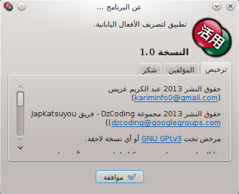
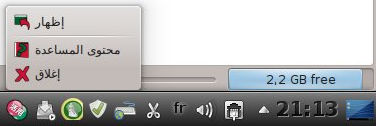

.
هناك ثلاثة لواحق للملفات:
.
هناك ثلاثة لواحق للملفات:
في هذا التطبيق، نود أن نقترح أكبر عدد ممكن من الميزات، لمساعدة متعلمي اللغة اليابانية في تصريف الأفعال اليابانية. هذه هي الميزات المقترحة في نسخة البرنامج هذه:
إن أردت المزيد من الميزات، يمكنك مساعدتنا عن طريق إرسال طلب إلى القائمة البريدية لمجموعة المستخدمين: dzcoding@googlegroups.comإذا أردت التحقق من وجود الفعل، يمكنك فقط كتابته بشكله المعجمي، ثم تصريفه. إن كان موجودا، ستتمكن من رؤية نوعه وتصريفه. أما إن كان غير موجود، ستظهر لك رسالة تخبرك بذلك.
تذكر! الفعل يجب أن يكون في صيغته المعجمية (U-Form). مثلا: 食べる ، 飲む ، 行く ، 信じる ، 死ぬ ، 見る ، 泳ぐ ، 遊ぶ ، 出す ، 立つ ، 合う ، إلخ. أيضا، يمكنك تصريف الأسماء التي تتحول إلى فعل بإضافة الفعل المساعد する . مثلا: 勉強する ، 選択する ، 連絡する ، إلخ. في الحقيقة، تصريف هذه الأسماء ما هو إلا تصريف الفعل المساعد する. بعد إدخال الفعل، يمكنك الضغط على مفتاح العودة (في لوحة المفاتيح) أو الضغط على زر "تصريف".
نتيجة التصريف موزعة على ثلاثة جداول. تصنيف كل جدول مستند على درجة تعقيد التصريف، وأيضا حالة الاستخدام.
هذا التصريف يستعمل من طرف اليابانيين لتعلم تصريف الأفعال. إن كنت تود تعلم التصريف كما يتعلمه اليابانيون، هذا هو الاختيار الأمثل.
تقريبا نفس ما يوجد في التصريف القياسي، إضافة إلى صيغة T. هذا النوع من التصريف يمدك بمختلف الجذوع التي يمكن باستعمالها الحصول على تصاريف معقدة عن طريق إضافة اللواحق. هذه الصيغ هي: الشكل الناقص والشكل الافتراضي وشكل الأمر والشكل الموصول والشكل النهائي والشكل النعتي.
يتم الحصول على التصريف المعقد بإضافة اللواحق إلى الأشكال البسيطة. التصريف المعقد يتبع ثلاثة محاور:
يمكنك البنامج من تخزين المحتوى، سواء عن طريق الطباعة أو عن طريق تصديره إلى ملف. بعد التصريف، يمكنك تنفيذ هاتين العمليتين من قائمة "ملف"، أو من شريط الأدوات. يمكنك اختيار الجداول المراد تخزينها من الخيارات.
لتصدير محتوى التصريف، اختر قائمة "تصدير المحتوى"، أو اضغط على الزر
.
هناك ثلاثة لواحق للملفات:
لطباعة المحتوى، اختر القائمة "طباعة" أو اضغط على الزر .
يمكنك التحكم في حجم جداول التصريف.
يمكنك تكبير حجم المحتوى من قائمة "عرض->حجم->تكبير"، أو بالضغط على الزر

يمكنك تصغير حجم المحتوى من قائمة "عرض->حجم->تصغير"، أو بالضغط على الزر

يمكنك استرجاع الحجم العادي من قائمة "عرض->حجم->حجم عادي"، أو بالضغط على الزر

هنا يمكنك التحكم في خيارات التطبيق.
يمكنك الحصول على صندوق الحوار "خيارات"، إما من قائمة "تحرير->خيارات" أو بالضغط على الزر
 .
الخيارات مقسمة إلى قسمين: واجهة المستخدم وتصدير المحتوى.
.
الخيارات مقسمة إلى قسمين: واجهة المستخدم وتصدير المحتوى.
يمكنك اختيار لغة التطبيق. أيضا، يمكنك اختيار ستايل الجداول. عند الضغط على زر "موافقة"، تتغير اللغة مباشرة.
في هذا الإطار، يمكنك التحكم في المحتوى الذي تريد حفظه (تصدير أو طباعة). يمكنك اختيار الجداول التي تريد تصديرها، وما إذا كنت تريد تصديره بالستايل.
يمكنك الحصول على هذه المساعدة باختيار قائمة "مساعدة->محتوى المساعدة" أو بالضغط على الزر
 .
.
إن كنت تريد الحصول على معلومات حول JapKatsuyou، يمكنك اختيار قائمة "مساعدة->عن البرنامج" أو بالضغط على الزر
 .
.

يمكنك إغلاق أو إخفاء البرنامج إلى شريط المهام، باختيار "ملف->إخفاء" أو بالضغط على زر الإغلاق.
إن كنت تريد الخروج من البرنامج، يمكنك اختيار قائمة "ملف->إغلاق" أو بالضغط على الزر
 .
.
إن كنت تريد استرجاع التطبيق من وضع الإخفاء، اضغط على أيقونة البرنامج بالزر الأيسر للفأرة، أو الزر الأيمن والضغط على الزر
.
